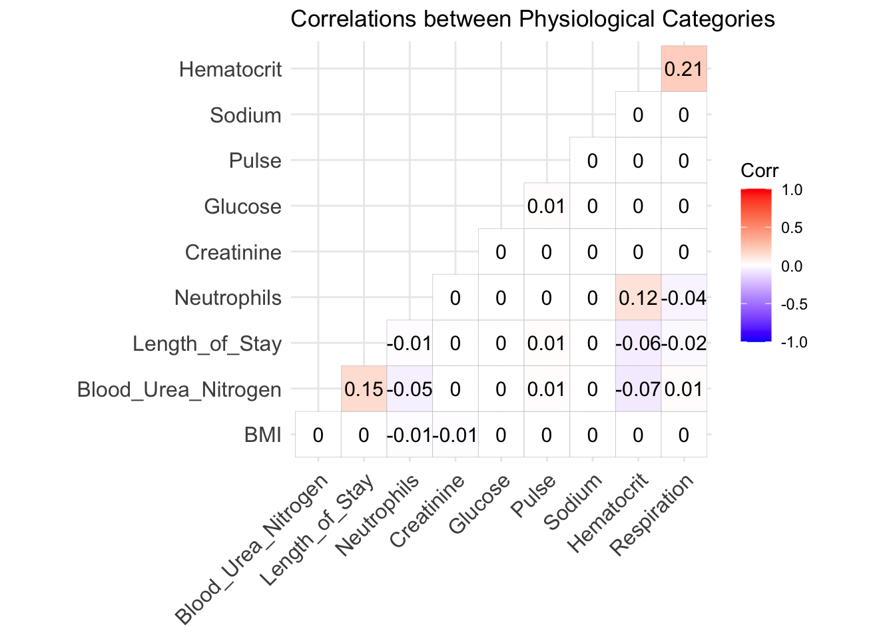

Chapter 5 Results
The boxplot in plot A clearly shows that the length of stay for a patient is generally higher if the patient has some pre-existing conditions in comparison to if they do not have any. In fact, the median stay length for patients without any conditions (2 days) is much shorter than the the median stay length for patients with conditions (5 days). Notably, as seen in the bar chart of plot B, there are no patients who had pre-existing conditions that also stayed at the hospital for less than 3 days.
The distributions of hospital stay lengths for patients both without and with pre-existing conditions are uni-modal and right-skewed; they both peak at the shortest length of stay. However, the interquartile range for patients without conditions is much larger (about twice the size) than that for patients with conditions, indicating that although most patients without conditions had a short hospital stay, there also were a noteworthy number of these patients who had longer stays than their condition history would suggest. However, of patients who had the longest hospital stays (8, 9+ days), more had pre-existing conditions, as seen in plot B.

As seen in the bar graph of plot A, most of the patients admitted did not have any pre-existing medical conditions. A substantial amount of admitted patients had 1 or 2 conditions, but few had more than 3.
The cleveland dot plot in plot B shows that, as the length of stay in hospital increases, the number of conditions that the patient has generally increases. Patients who stayed only 1-2 days in the hospital all have 0 conditions. However, as the length of stay increases, it is clear to see that the number of patients who have no conditions decreases. This is also the case for patients who have 1 or 2 conditions, and for patients who have 3 conditions - though to a lesser extent. However, patients with no/few conditions are the most abundant, and even as the length of stay increases, there are more patients with few conditions than many. Patients who have 4 or more conditions stayed for a minimum of 4 days, though there are very few of them and the number of such patients for each length of stay is generally constant. Overall, this shows that the more pre-existing conditions a patient has, the more likely it is for them to stay longer in the hospital.

The bar graph in plot A shows that the majority of admitted patients had not been previously admitted to the hospital. The rest of the patients had previously been admitted to the hospital 1, 2, 3, 4 times at similar frequencies.
The cleveland dot plot in plot B shows that, as the number of previous admissions increases, the length of stay in the hospital also generally increases. The number of patients who either had 0 or 1 previous admissions to the hospital generally decreases as the length of stay increases. In fact the patients who had the shortest stays (1-3 days) had at most only 1 previous admission. Up until stays of 4 days, it can be seen that patients who had the fewest (i.e. 0) previous admissions were generally the most abundant. However, interestingly, this trend reverses for stays of 6 days or longer. For stays of 6 ore more days, it seems that patients who have a high number of previous admissions are the more abundant, whereas patients with few previous admissions are rarer. In fact, of the patients that had the longest stays (9+ days), all had been admitted to the hospital at least twice, with patients who had 5 or more previous admissions being the most common.
The above mosaic plot shows that there is a positive relationship between the number of conditions, the number of previous admissions, and the length of stay.
(Note: For clarity in the mosaic plot, the number of categories for each variable has been decreased. “Short” stays in the hospital refer to those that are 4 days (the median length of stay) or less, and “long” stays in the hospital refer to those that are 5 days or more.)
For patients who had 0 previous admissions, the proportion of patients who had “long” stays increased as the number of conditions increased. This trend is also seen for patients with 1 or 2 previous admissions to the hospital. Patients who had 3 or more previous admissions, however, all had “long” hospital stays regardless of the number of conditions, suggesting that for these patients, the number of conditions is irrelevant or at least not as important.
The above plot is a plot visualizing the top 8 most common patterns of conditions admitted patients have. In the top-most tile plot, each column represents a pattern of condition that a certain number of admitted patients presented, and each row represents a single medical condition. A grey tile means that this pattern does not include this condition, whereas a pink tile means that the pattern does. For example, pattern 1 (column 1) is the pattern where the patient did not have any of the conditions. Pattern 2 (column 2) is the pattern where the patient only had psychological disorder major, but not any of the other conditions. The columns are ordered from 1 to 8 by frequency in the data set, which can be seen in the bar graph below, showing the percentage frequency of each pattern.
The majority of admitted patients did not have any of the conditions (pattern 1), and the next seven most common patterns were comparatively much rarer. Most of the top patterns had only one of the given conditions, although patterns 4 and 8 had two conditions each. In these patterns, the most common condition was psychological disorder major (seen in 3 patterns) and iron deficiency (seen in 2 patterns). Some conditions were not seen at all in the top patterns, such as pneumonia or malnutrition.
The above boxplot shows that the patients who exhibited the most common pattern (no conditions) generally had a shorter stay in the hospital than patients exhibiting any other pattern. In fact, the median length of stay for patients with condition pattern 1 (2 days) was shorter than the minimum length of stay for patients of any other condition pattern.
Interestingly, the 5 of the next 7 most common condition patterns had the same median length of stay (5 days), while the other 2 patterns also had the same median length (4 days). The minimums and 75th quartiles of all the next top 7 patterns were also all the same.